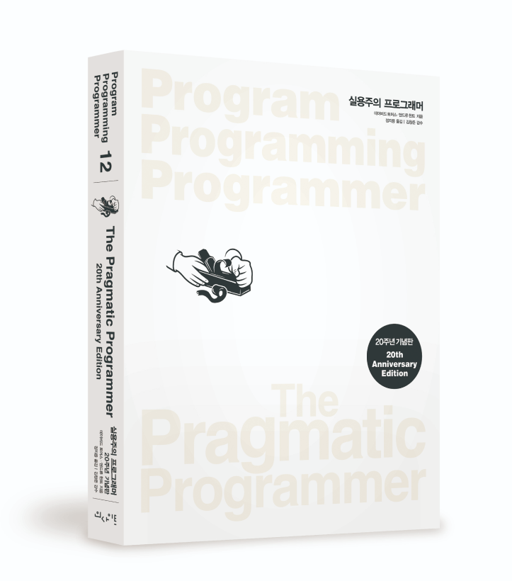

1) 깨진 창문을 내버려 두지 말라.
2) 품질을 요구 사항으로 만들어라.
3) 읽고 듣는 것을 비판적으로 분석하라.
4) 지식을 일반 텍스트로 저장하라.
5) 완벽한 소프트웨어를 만들 수 없다.

6) 무엇을 말하는가와 어떻게 말하는가 모두 중요하다.
7) 프로그래머는 사람들이 자신이 원하는 바를 깨닫도록 돕는다.
8) DRY:반복하지 말라 (Don't Repeat Yourself)
9) 사용자를 기쁘게 하라. 그저 코드만 내놓지 말라.
10) 그놈의(damn) 오류 메시지 좀 읽어라.